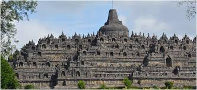
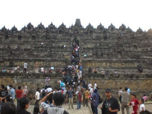
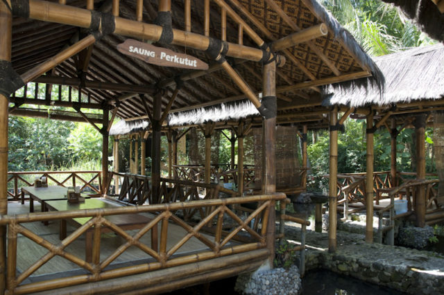

|  |
Candi Borobudur |
|
Borobudur (bahasa Jawa: ꦕꦤ꧀ꦝꦶꦧꦫꦧꦸꦝꦸꦂ, translit. Candhi Barabudhur) adalah sebuah candi Buddha yang terletak di Borobudur, Magelang, Jawa Tengah, Indonesia. Monumen ini terdiri atas enam teras berbentuk bujur sangkar yang di atasnya terdapat tiga pelataran melingkar, pada dindingnya dihiasi dengan 2.672 panel relief dan aslinya terdapat 504 arca Buddha. Borobudur memiliki koleksi relief Buddha terlengkap dan terbanyak di dunia |
SejarahMonumen ini merupakan model alam semesta dan dibangun sebagai tempat suci untuk memuliakan Buddha sekaligus berfungsi sebagai tempat ziarah untuk menuntun umat manusia beralih dari alam nafsu duniawi menuju pencerahan dan kebijaksanaan sesuai ajaran Buddha. Para peziarah masuk melalui sisi timur dan memulai ritual di dasar candi dengan berjalan melingkari bangunan suci ini searah jarum jam, sambil terus naik ke undakan berikutnya melalui tiga tingkatan ranah dalam kosmologi Buddha. Ketiga tingkatan itu adalah Kāmadhātu (ranah hawa nafsu), Rupadhatu (ranah berwujud), dan Arupadhatu (ranah tak berwujud). Dalam perjalanannya para peziarah berjalan melalui serangkaian lorong dan tangga dengan menyaksikan tak kurang dari 1.460 panel relief indah yang terukir pada dinding dan pagar langkan. Menurut bukti-bukti sejarah, Borobudur ditinggalkan pada abad ke-14 seiring melemahnya pengaruh kerajaan Hindu dan Buddha di Jawa serta mulai masuknya pengaruh Islam. Dunia mulai menyadari keberadaan bangunan ini sejak ditemukan 1814 oleh Sir Thomas Stamford Raffles, yang saat itu menjabat sebagai Gubernur Jenderal Inggris atas Jawa. Sejak saat itu Borobudur telah mengalami serangkaian upaya penyelamatan dan pemugaran (perbaikan kembali). Proyek pemugaran terbesar digelar pada kurun waktu 1975 hingga 1982 atas upaya Pemerintah Republik Indonesia dan UNESCO, kemudian situs bersejarah ini masuk dalam daftar Situs Warisan Dunia. |
Daya Tarik Sebagai Tempat LiburanTerletak sekitar 40 kilometer (25 mil) barat laut dari Kota Yogyakarta, Borobudur terletak di atas bukit pada dataran yang dikeliling dua pasang gunung kembar; Gunung Sindoro-Sumbing di sebelah barat laut dan Merbabu-Merapi di sebelah timur laut, di sebelah utaranya terdapat Bukit Tidar, lebih dekat di sebelah selatan terdapat jajaran perbukitan Menoreh, serta candi ini terletak dekat pertemuan dua sungai yaitu Sungai Progo dan Sungai Elo di sebelah timur. Menurut legenda Jawa, daerah yang dikenal sebagai Dataran Kedu adalah tempat yang dianggap suci dalam kepercayaan Jawa dan disanjung sebagai 'Taman pulau Jawa' karena keindahan alam dan kesuburan tanahnya. Selain Borobudur, terdapat beberapa candi Buddha dan Hindu di kawasan ini. Pada masa penemuan dan pemugaran di awal abad ke-20 ditemukan candi Buddha lainnya yaitu Candi Mendut dan Candi Pawon yang terbujur membentang dalam satu garis lurus.[17] Awalnya diduga hanya suatu kebetulan, akan tetapi berdasarkan dongeng penduduk setempat, dulu terdapat jalan berlapis batu yang dipagari pagar langkan di kedua sisinya yang menghubungkan ketiga candi ini. Tidak ditemukan bukti fisik adanya jalan raya beralas batu dan berpagar dan mungkin ini hanya dongeng belaka, akan tetapi para pakar menduga memang ada kesatuan perlambang dari ketiga candi ini. Ketiga candi ini (Borobudur-Pawon-Mendut) memiliki kemiripan langgam arsitektur dan ragam hiasnya dan memang berasal dari periode yang sama yang memperkuat dugaan adanya keterkaitan ritual antar ketiga candi ini. Keterkaitan suci pasti ada, akan tetapi bagaimanakah proses ritual keagamaan ziarah dilakukan, belum diketahui secara pasti. |
Aktivitas Wisatawan Di BorobudurMempelajari Seni Sastra dan Budaya , Hunting Foto , .Berburu Souvenir , Berkeliling Kompleks Candi Borobudur Hunting Foto |
Pilihan TransportasiJika kamu berasal dari luar Jawa Tengah dan ingin naik pesawat, bisa memilih penerbangan dengan rute kota asalmu - Bandara Adisutjito, Yogyakarta. |
Kendaraan PribadiCara lain yang bisa dilakukan untuk pergi ke Candi Borobudur di Magelang adalah naik kendaraan pribadi. Namun, kamu perlu memilih waktu dan season yang pas sebelum pergi ke Candi Borobudur untuk menghindari kemacetan. Pilih perjalanan pagi hari dan hari selain libur panjang atau libur anak sekolah, ya. |
Tiket Masuk BorobudurBagi yang belum pernah liburan ke Borobudur pasti akan bertanya! Apakah ada biaya tiket masuk ke objek wisata Borobudur ? Harga tiket masuk Candi Borobudur bagi wisatwan lokal dibanderol dengan tarif sebesar Rp 50.000 untuk orang dewasa. Sedangkan untuk anak dengan usia 3-10 tahun, harga tiket masuk Candi Borobudur dibanderol dengan tarif Rp 25.000 per orang. |
KulinerSaung Makan Bu Empat, kuliner sekitar Borobudur yang patut dicicipi kelezatannya. Sumber foto. Tempat makan ini cocok bagi Anda yang berlibur ke Candi Borobudur bersama rombongan atau keluarga besar terkasih. Saung Makan Bu Empat menyediakan berbagai saung untuk tempat Anda menikmati maskaan yang telah disajikan. Berlokasi di Jalan Raya Borobudur No.4, Ngrajek, Mungkid, tempat makan di sekitar Candi Borobudur ini menyediakan berbagai menu seperti tempe, ayam hingga gurame. Yang menjadi andalan dari tempat ini adalah sambalnya yang unik dan pedas. |